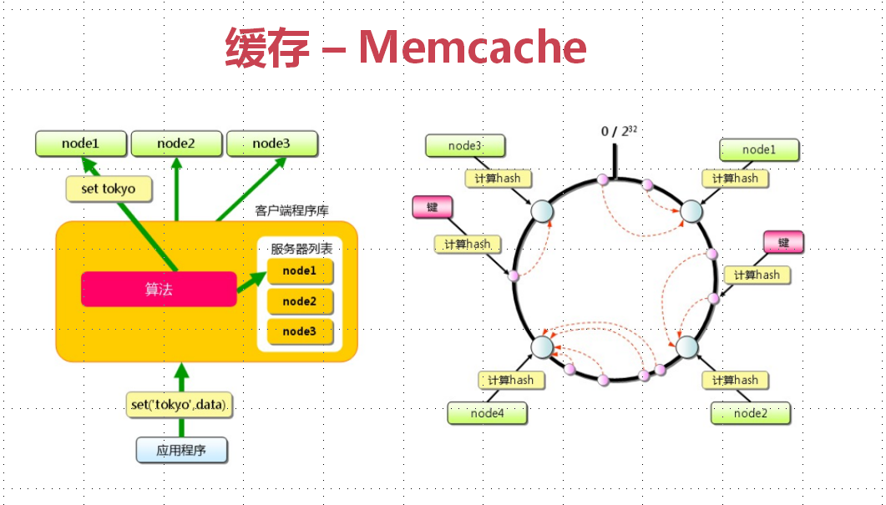

缓存学习笔记
Oct 09, 2018 1:41·792 words ·3 minutes read
缓存特征
- 命中率： 命中数/(命中数+没有命中数)
- 最大元素（空间）
一旦数据超过最大元素将会触发缓存情况策略， 需要合理设置最大元素数量， 提高命中率和效率
- 清空策略： FIFO, LFU, LRU, 过期时间， 随机等
FIFO： 最先进入的数据当缓存不够， 或者达到最大元素限制时候会优先被清除掉， 主要比较元素的创建时间， 在数据实时性要求场景下可以选择该策略， 优先保证最新数据可用
LFU： 无论是否过期， 根据元素使用次数来判断， 清除使用次数最少的元素来释放空间， 主要比较元素的命中次数，在保证高频数据有效性场景下可以使用
LRU： 无论是否过期， 比较元素最近get时间， 删除最远使用的元素。 在热点数据场景下较适用
影响缓存命中率的因素
- 业务场景和业务需求： 适合读多写少的业务场景， 实时性越低越适合缓存
- 缓存的设计（粒度和策略）： 粒度越小命中率就会越高， 更新缓存比移除命中率更高， 但是系统复杂度更高
- 缓存的容量和基础设施： 应用内置的缓存比较容易出现单击瓶颈， 分布式缓存更容易扩展。 所以需要做好系统容量规划， 并考虑是否可扩展
单个节点出现故障的时候， 需要避免缓存失效， 最大程度降低影响。 可通过一致性哈希算法和节点冗余的方式来避免这个问题
从架构师角度为了提高缓存命中率：
竟可能多的从缓存获取数据并避免缓存失效， 这比较考验架构师能力， 需要从业务需求， 缓存粒度， 缓存策略， 技术选型等方面通盘考虑权衡。 竟可能聚焦在高频访问并时效性要求不高的热点业务上。 通过缓存预加载（预热）， 增加存储容量， 调整缓存粒度， 更新缓存等方法来提高命中率。
缓存分类和应用场景
- 本地缓存： 编程实现（成员变量， 局部变量， 静态变量）、 Guava Cache
- 分布式缓存： Memcache、 Redis
Guava Cache

继承了ConcurrentHashMap的思路， 使用多个segment方式的细粒度锁保证线程安全和高并发的需求。 key被封装在weak reference引用中。 value被封装在weak或者soft reference引用中。 可以统计命中率， 异常率等统计数据
Memcache

应用广的开源分布式缓存产品， 本身不支持， cache的分布式主要在客户端实现。 客户端路由。 一致性哈希算法， 除了计算key的哈希值还计算每个mencahce server节点的哈希值。 通过查找哈希值大于key对应的hash值的最小server作为存储该key的目标server。 增加了虚拟节点的设计进一步提高高可用性
memcache内存结构

Redis
支持